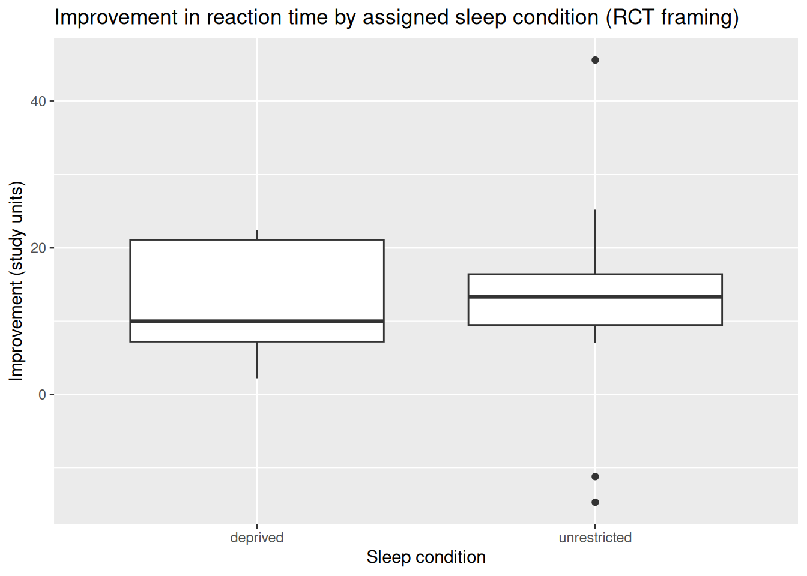

Code
flowchart LR
A[AP calculus in HS] --> U[University]
A --> P[Pass calculus]
U --> Pflowchart LR A[AP calculus in HS] --> U[University] A --> P[Pass calculus] U --> P
Causal questions, study design, and confounding
Project: Project 4 — Designing Fair Comparisons · Preview: Read 0 · Prerequisite: Module 3 · Next: Quiz A (Def & Notation), then Read 2.
This reading is your self-paced textbook for Module 4, Part 1. Work one section at a time; use Check yourself boxes before Quiz A. You will learn to distinguish observational studies from randomized experiments, identify confounders, and understand what p-values can and cannot establish about causation.
Work through both sections below in order. Each section ends with Check yourself questions.
After this reading you should be able to:
Inference for two-group comparisons — causal questions and study design
Confounding
Project 4 asks you to design a fair comparison between two groups. This section gives you the vocabulary: EV, RV, RCT vs observational, and what a p-value can and cannot tell you about causation.
This lecture demostrate how to do a fair comparison of two groups using the observational study design: the groups exist before you analyze them (which university, sleep habits in the wild, nightlight use, etc.). Lecture 27 gave you tables and plots for two categorical variables; here we connect those tools to causal questions, three competing explanations for any difference, and Causal Directed acyclic graphs (DAGs) and subclassification tell you what to measure and how to compare fairly within levels of a confounder when that is possible.
prop.test() to elimiate chance as an explanation for the observed difference and estimate the causal effect of group membership on the effect of interest.A causal question asks about the effect of something. Name:
| Role | Other names | Meaning |
|---|---|---|
| Response | outcome, dependent | The effect you want to compare. |
| Explanatory | treatment, exposure | The potential cause or group label. |
When writing a research question that is causal, it is best practice to:
Define variables precisely: State how each variable is measured and any cutoffs or rules (e.g. pass/fail, deprived vs unrestricted sleep, income in dollars). Vague labels make design and analysis impossible.
Identify the observational units: The unit is the entity that gets a value for each variable—often one person at one time point for this unit (e.g. one student in one calculus term). Your dataset is usually one row per observational unit.
If the response is numerical, you typically summarize comparison of two groups with means (or medians) and a Welch two-sample t-test** or randomization test on the difference in means (Lecture 29, Lecture 30). If the response is binary (or you reduce an outcome to two categories), you compare proportions or rates and use prop.test / chisq.test or a chi-square shuffle applet (this lecture, Lecture 30).
Note: Project 4 will asks you to plan a study to answer a causal question from one of your classamtes.
In an observational study, researchers record which group each unit is in; they do not randomly assign the explanatory variable. Examples: students choose a university; parents choose nightlight use for their children; people decide what to eat for lunch.
A difference in sample proportions or means from an observational study can reflect:
Lecture 29 covers RCTs, where random assignment is used to balance confounders in expectation and support causal conclusions about the assigned treatment (with the usual caveats).
Students often confuse random assignment (group assignment within the sample) with random sampling (selection of individuals from a population): both are useful, but for different goals. Random assignment is used to adjust for confounding between the groups, making a comparison between the groups more fair. Random sampling is used to elimated bias when generalizing from the study data back to a larger population.
Suppose a certain state has two polytechnic universities and the Chancellor’s Office is trying to decide which one is doing a better job teaching calculus to incoming freshmen.
This example is a modification of a story in Pearl, Judea, and Dana Mackenzie, The Book of Why: The New Science of Cause and Effect (Basic Books, 2018).
Both universities have a calculus class of 200 students. The number (and percentage) of students who passed is:
| Passed calculus | |
|---|---|
| Timber Ridge | 150/200 (75%) |
| Wild Horse | 154/200 (77%) |
Wild Horse has more students who passed in this cohort (154 vs 150).
| AP calculus | No AP calculus | Combined | |
|---|---|---|---|
| Timber Ridge | 45/50 (90%) | 105/150 (70%) | 150/200 (75%) |
| Wild Horse | 136/170 (80%) | 18/30 (60%) | 154/200 (77%) |
Each cell shows number who passed / number of students in that cell.
Read down each column (holding preparation fixed):
So within each preparation level, Timber Ridge does better.
| Used tutoring center on campus | Did not use tutoring center | Combined | |
|---|---|---|---|
| Timber Ridge | 86/120 (71%) | 64/80 (80%) | 150/200 (75%) |
| Wild Horse | 65/90 (72%) | 89/110 (81%) | 154/200 (77%) |
Within “did not use tutoring,” Wild Horse’s pass rate is slightly higher (81% vs 80%). Within “used tutoring,” Wild Horse is also slightly higher (72% vs 71%). But does this breakdown make a fair comparison between the two universities?
We should not treat the tutoring breakdown as the right way to fairly compare the causal effect of which university a student attends when tutoring centers are part of what the university provides. If we do breakdown the rates by tutoring or not, we’d remove part of how the university affects success: the tutoring center is on the causal pathway from university to passing, not merely a pre-enrollment mix of students like AP preparation in high school.
When people see tables like these (even faculty audiences), votes are often split on “which school is better.” Causal DAGs are an easy way to see that AP calculus behaves like a confounder you may want to condition on for a fairer comparison of universities, while tutoring center use is not the same kind of adjustment target if tutoring is part of the university’s effect.
A confounder (for the effect of explanatory variable \(X\) on response \(Y\)) is a variable that influes both** \(X\) and \(Y\).
Example: AP calculus in the story above confounds university and passing because it influenes both where students enroll and how likely they are to pass.
Example: Nightlight and myopia: genetics and parental myopia may confound nightlight use and child myopia.
DAG recap. Nodes = variables. Directed edge \(A \rightarrow B\) = “\(A\) is posited to help cause \(B\) in this simplified story.” Acyclic = no directed cycles.
Backdoor path (informal definition). For the causal effect of university \(U\) on passing \(P\), a backdoor path is a non-causal route that “leaks” association into the crude \(U\)–\(P\) link—e.g. \(U \leftarrow A \rightarrow P\) when \(A\) is AP calculus.
An adjustment set (backdoor adjustment, introductory version) is a set of variables you condition on (here, mainly subclassification: compare universities within levels of \(A\)) so that, if the DAG is correct and other assumptions hold, the conditional comparison is less biased for the effect of \(U\) on \(P\).
The figure below is a DAGitty graph for this teaching example (university, preparation, tutoring, passing, and related variables as you drew them in the async course). Use DAGitty to reopen the model and highlight adjustment sets under your assumptions.
flowchart LR
A[AP calculus in HS] --> U[University]
A --> P[Pass calculus]
U --> Pflowchart LR A[AP calculus in HS] --> U[University] A --> P[Pass calculus] U --> P
flowchart LR
U2[University] --> T[Tutoring center use]
U2 --> P2[Pass calculus]
T --> P2flowchart LR U2[University] --> T[Tutoring center use] U2 --> P2[Pass calculus] T --> P2
Under the AP DAG, the appropriate breakdown for comparing universities on pass rates while addressing that backdoor is the AP vs no AP table—not the tutoring table used as if it were the same kind of confounder.
| AP calculus | No AP calculus | Combined | |
|---|---|---|---|
| Timber Ridge | 45/50 (90%) | 105/150 (70%) | 150/200 (75%) |
| Wild Horse | 136/170 (80%) | 18/30 (60%) | 154/200 (77%) |
| Used tutoring | Did not use tutoring | Combined | |
|---|---|---|---|
| Timber Ridge | 86/120 (71%) | 64/80 (80%) | 150/200 (75%) |
| Wild Horse | 65/90 (72%) | 89/110 (81%) | 154/200 (77%) |
Before adjusting, ask: Did we include every variable that needs to be in the story, that is, every common cause or fork that links university, passing, and other measured variables? Residual confounding from unmeasured variables is always possible.
You can trace backdoor paths on the board and list a set of variables to condition on, or use DAGitty under an assumed graph to suggest adjustment sets.
To make a fairer comparison of calculus passage rates across universities—if you accept a DAG like the one above (and usual positivity / correct functional-form ideas we skip in this intro), we would want data on student motivation, socioeconomic status (SES), and AP calculus (and university and pass/fail), then compare universities within levels of the variables in the adjustment set you defend. AP alone is already enough to change the story in this toy example; thinking about the data we don’t have on motivation and SES reminds us that real policy questions usually need datasets with more variables.
Hypothesis tests and p-values address explanation (2) only: could the data look like this by chance alone? That is, what would we expect to see if there were no causation or confounding model? A p-value does not, by itself, choose us choose between (1) causation and (3) confounding.
From the applet collection:
For binary outcomes (pass/fail, infected or not) compared across two groups, common large-sample tools are prop.test() (equivalent 2×2 logic to a z-test for two proportions) and chisq.test() on the contingency table of counts. Conditions:
$expected. If violated, use simulate.p.value = TRUEif (!requireNamespace("tidyverse", quietly = TRUE)) {
install.packages("tidyverse", repos = "https://cloud.r-project.org")
}
library(tidyverse)
uni_crude <- tibble(
university = rep(c("Timber Ridge", "Wild Horse"), c(200, 200)),
passed = c(rep(c(TRUE, FALSE), c(150, 50)), rep(c(TRUE, FALSE), c(154, 46)))
)
tab_uni <- table(uni_crude$university, uni_crude$passed)
tab_uni
FALSE TRUE
Timber Ridge 50 150
Wild Horse 46 154Two-sample proportion test:
prop.test(x = c(150, 154), n = c(200, 200), correct = FALSE)
2-sample test for equality of proportions without continuity correction
data: c(150, 154) out of c(200, 200)
X-squared = 0.2193, df = 1, p-value = 0.6396
alternative hypothesis: two.sided
95 percent confidence interval:
-0.10368381 0.06368381
sample estimates:
prop 1 prop 2
0.75 0.77 Chi-squared test of independence (check expected counts first):
cq <- chisq.test(tab_uni)
cq$expected
FALSE TRUE
Timber Ridge 48 152
Wild Horse 48 152cq
Pearson's Chi-squared test with Yates' continuity correction
data: tab_uni
X-squared = 0.12336, df = 1, p-value = 0.7254uni_crude |>
count(university, passed) |>
ggplot(aes(x = university, y = n, fill = passed)) +
geom_col(color = "white") +
labs(
title = "Calculus pass counts by university (crude)",
x = NULL,
y = "Count",
fill = "Passed"
)
Interpretation: A large or small p-value for speaks to only whether this data is consistent with a by chance explanation, not to whether attending Wild Horse causes a higher pass rate.
| ::: {.callout-tip icon=false} ## Check yourself — Causal questions and study design |
| 1. In a study comparing smokers and non-smokers on lung cancer rates, which design is this — RCT or observational? |
| 2. What is an explanatory variable (EV) and a response variable (RV)? Give an example. |
| 3. A p-value of 0.03 is found for a group difference in an observational study. Does this prove the treatment caused the difference? Explain. |
| 4. Sketch a simple DAG with one confounder \(C\) that affects both EV \(X\) and outcome \(Y\). |
| ::: |
| ::: {.content-visible when-format=“html”} |
| 1. Observational — researchers cannot randomly assign people to smoke. Group membership is self-selected. |
| 2. EV: the variable that explains or predicts (e.g. treatment group). RV: the outcome of interest (e.g. recovery status). Directionality reflects the research question. |
| 3. No. A p-value only addresses whether the difference is surprising if there were no true difference. Confounders in an observational study can still explain the association causally. |
| 4. \(C \rightarrow X\) and \(C \rightarrow Y\). Without controlling for \(C\), the \(X \rightarrow Y\) path includes confounded association. |
| ::: {.content-visible when-format=“pdf”} |
| #### Answers — Causal questions and study design |
| 1. Observational — researchers cannot randomly assign people to smoke. Group membership is self-selected. |
| 2. EV: the variable that explains or predicts (e.g. treatment group). RV: the outcome of interest (e.g. recovery status). Directionality reflects the research question. |
| 3. No. A p-value only addresses whether the difference is surprising if there were no true difference. Confounders in an observational study can still explain the association causally. |
| 4. \(C \rightarrow X\) and \(C \rightarrow Y\). Without controlling for \(C\), the \(X \rightarrow Y\) path includes confounded association. |
| ::: |
Section 1 introduced observational vs experimental designs. Here we name the mechanism that makes observational comparisons tricky: the confounder. The RCT is the gold standard precisely because random assignment breaks confounding paths.
This lecture focuses on randomized controlled trials (RCTs). Random assignment of the group membership is the design feature that replaces the main threat to internal validity, confounding.
t.test(..., var.equal = FALSE)) after checking conditions.Internal validity = how well the study rules out alternative explanations for an observed difference between the groups within the study.
Under ideal conditions, random assignment balances both measured and unmeasured baseline confounders on average.
Research question. Does sleep deprivation change improvement in reaction time from a baseline test to a test three days later?
Design (for class). Suppose students were randomly assigned to deprived vs unrestricted sleep groups before the follow-up test of reaction times.
Hypotheses (population means). Let \(\mu_{\text{dep}}\) and \(\mu_{\text{unr}}\) be mean improvement in the two groups.
| sleep condition | improvement |
|---|---|
| unrestricted | -14.7 |
| unrestricted | 14.5 |
| deprived | 2.2 |
| deprived | 21.3 |
| unrestricted | 11.5 |
| deprived | 13.7 |
| deprived | 9.6 |
| deprived | 22.4 |
| deprived | 21.1 |
| deprived | 7.2 |
| deprived | 10.0 |
| unrestricted | 25.2 |
| unrestricted | -11.2 |
| unrestricted | 7.0 |
| unrestricted | 14.7 |
| deprived | 4.5 |
| unrestricted | 45.6 |
| unrestricted | 15.6 |
| unrestricted | 18.8 |
| unrestricted | 12.1 |
| unrestricted | 10.3 |
if (!requireNamespace("tidyverse", quietly = TRUE)) {
install.packages("tidyverse", repos = "https://cloud.r-project.org")
}
library(tidyverse)
sleep_rct <- tibble(
sleepcondition = c(
"unrestricted", "unrestricted", "deprived", "deprived", "unrestricted",
"deprived", "deprived", "deprived", "deprived", "deprived",
"deprived", "unrestricted", "unrestricted", "unrestricted", "unrestricted",
"deprived", "unrestricted", "unrestricted", "unrestricted", "unrestricted",
"unrestricted"
),
improvement = c(
-14.7, 14.5, 2.2, 21.3, 11.5, 13.7, 9.6, 22.4, 21.1, 7.2, 10.0,
25.2, -11.2, 7.0, 14.7, 4.5, 45.6, 15.6, 18.8, 12.1, 10.3
)
) |>
mutate(
sleepcondition = factor(sleepcondition, levels = c("deprived", "unrestricted"))
)sleep_rct |>
group_by(sleepcondition) |>
summarize(
n = n(),
mean_improvement = mean(improvement),
sd_improvement = sd(improvement),
median_improvement = median(improvement),
iqr_improvement = IQR(improvement)
)# A tibble: 2 × 6
sleepcondition n mean_improvement sd_improvement median_improvement
<fct> <int> <dbl> <dbl> <dbl>
1 deprived 9 12.4 7.61 10
2 unrestricted 12 12.4 15.5 13.3
# ℹ 1 more variable: iqr_improvement <dbl>ggplot(sleep_rct, aes(x = sleepcondition, y = improvement)) +
geom_boxplot() +
labs(
title = "Improvement in reaction time by assigned sleep condition (RCT framing)",
x = "Sleep condition",
y = "Improvement (study units)"
)
Conditions (practical): Independence between all students in both groups; small sample sizes so we’ll have to assume the populations of improvement are approximately normal.
t.test(improvement ~ sleepcondition, data = sleep_rct, var.equal = FALSE)
Welch Two Sample t-test
data: improvement by sleepcondition
t = -0.0010785, df = 16.806, p-value = 0.9992
alternative hypothesis: true difference in means between group deprived and group unrestricted is not equal to 0
95 percent confidence interval:
-10.88355 10.87244
sample estimates:
mean in group deprived mean in group unrestricted
12.44444 12.45000 Story. 200 patients per arm; count infections (yes/no).
Hypotheses (population proportions). Let \(p_V\) and \(p_P\) be the population probabilities (or long-run proportions) of infection under vaccine and placebo assignment in the target setting.
set.seed(2901)
vax_trial <- tibble(
arm = factor(rep(c("Vaccine", "Placebo"), each = 200)),
infected = c(rbinom(200, 1, 0.08), rbinom(200, 1, 0.14))
)
tab_v <- table(vax_trial$arm, vax_trial$infected)
tab_v
0 1
Placebo 174 26
Vaccine 178 22infected_vaccine <- sum(vax_trial$infected[vax_trial$arm == "Vaccine"])
n_vaccine <- sum(vax_trial$arm == "Vaccine")
infected_placebo <- sum(vax_trial$infected[vax_trial$arm == "Placebo"])
n_placebo <- sum(vax_trial$arm == "Placebo")
prop.test(x = c(infected_vaccine, infected_placebo), n = c(n_vaccine, n_placebo), correct = FALSE)
2-sample test for equality of proportions without continuity correction
data: c(infected_vaccine, infected_placebo) out of c(n_vaccine, n_placebo)
X-squared = 0.37879, df = 1, p-value = 0.5383
alternative hypothesis: two.sided
95 percent confidence interval:
-0.08366113 0.04366113
sample estimates:
prop 1 prop 2
0.11 0.13 chisq.test(tab_v)$expected
0 1
Placebo 176 24
Vaccine 176 24chisq.test(tab_v)
Pearson's Chi-squared test with Yates' continuity correction
data: tab_v
X-squared = 0.21307, df = 1, p-value = 0.6444Here random assignment makes a low infection rate in the vaccine arm more plausibly a treatment effect than the same table would be in an observational comparison.
Some groups cannot be randomly assigned (e.g. long-term smoking in teens).
A confounder is a variable associated with both the explanatory variable and the response that can create or distort the apparent association between them.
Older people drink more coffee and are more likely to have heart disease — so age distorts the coffee–heart disease association.
Random assignment distributes known and unknown confounders approximately equally across groups on average, so group differences are attributable to the treatment.
Subclassification / stratification — compare treatment groups within subgroups defined by the confounder value.